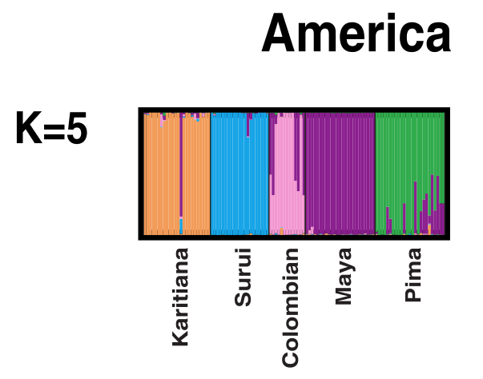

Visualizing topic models¶
Note
Unlike R or Octave/Matlab, Python has no native graphing or visualization library. The most widely used library for visualization is matplotlib and its functions mimic those found in Octave/Matlab (see For those new to Matplotlib).
Visualizing topic shares¶
When using topic models to explore text collections, we are typically interested in examining texts in terms of their constituent topics (instead of word frequencies). Because the number of topics is so much smaller than the number of unique vocabulary elements (say, 20 versus 20,000), a range of data visualization methods become available. The visualization techniques discussed below are not specific to topic models per se but rather fall into a more general category for techniques for visualizing count data.
The first way of visualizing the topic proportions associated with documents in a corpus uses a “stacked bar chart”. This visualization tends to be used when the number of topics is small. For example, a stacked bar chart is found in a paper employing LDA avant la lettre on allele frequency data [RPW+02]. [1]

Stacked bar chart¶
The idea underlying the stacked bar chart is that each text has some proportion
of its words associated with each topic. Because the model assumes that every
word is associated with some topic, these proportions must add up to one. For
example, in a three topic model, text number 1 might have 50% of its words
associated with topic 1, 25% with topic 2, and 25% with topic 3. The stacked bar
chart represents each document as a bar broken into colored segments matching
the associated proportions of each topic. The stacked bar chart below expresses
the topic proportions found in the six novels in the austen-brontë corpus:

If we look ahead to the top 10 words associated with each topic, we find that topics 0 and 1 are associated with words we anticipate finding in Austen (‘emma’, ‘elizabeth’, ‘darcy’, ‘sister’). Topic 4 is connected with Jane Eyre (‘rochester’, ‘house’).
This method of visualization works well when there are a small number of topics. With more than a handful of topics, the proportion associated with each topic tends to be difficult to distinguish. This is a limitation of the stacked bar chart. On the other hand, the visualization clearly communicates the idea that a document is made up of topic proportions that, taken together, account for all the words in a document.
To reproduce the stacked bar chart shown above we first need to model the
austen-brontë corpus using a five-topic topic model. We will use the
procedure described in Topic modeling with MALLET. First
we run MALLET using default parameters. As we will be analyzing more precisely
the association of words with topics, we will specify that the counts of
word-topic assignments be saved with the command-line option --word-topic counts
/tmp/word-topic.txt.
mallet-2.0.7/bin/mallet import-dir --input data/austen-brontë-split/ --output /tmp/topic-input.mallet --keep-sequence --remove-stopwords
mallet-2.0.7/bin/mallet train-topics --input /tmp/topic-input.mallet --num-topics 5 --output-doc-topics /tmp/doc-topics.txt --output-topic-keys /tmp/topic-keys.txt --word-topic-counts-file /tmp/word-topic.txt
We then gather the output into a document-topic matrix of topic shares, stored
in the variable doctopic. The names of the novels are stored in the variable
docnames.
docnames
doctopic.shape
doctopic
To make the stacked bar chart we layer individual bar charts on top of each other. Recall that a single (unstacked) bar chart can be created in matplotlib with the following code:
import matplotlib.pyplot as plt
N, K = doctopic.shape
ind = np.arange(N) # points on the x-axis
width = 0.5
plt.bar(ind, doctopic[:,0], width=width)
plt.xticks(ind + width/2, docnames) # put labels in the center
@savefig plot_example_bar.png width=7in
plt.title('Share of Topic #0')
Note
The matplotlib examples page describes how to produce various types of graphs using matplotlib.
To layer the bar charts, we plot each bar chart one by one, adjusting the
starting point (bottom is the parameter) so that the charts do not overlap.
# See: http://matplotlib.org/examples/pylab_examples/bar_stacked.html
import numpy as np
import matplotlib.pyplot as plt
N, K = doctopic.shape # N documents, K topics
ind = np.arange(N) # the x-axis locations for the novels
width = 0.5 # the width of the bars
plots = []
height_cumulative = np.zeros(N)
for k in range(K):
color = plt.cm.coolwarm(k/K, 1)
if k == 0:
# first plot
p = plt.bar(ind, doctopic[:, k], width, color=color)
else:
p = plt.bar(ind, doctopic[:, k], width, bottom=height_cumulative, color=color)
height_cumulative += doctopic[:, k]
plots.append(p)
plt.ylim((0, 1)) # proportions sum to 1, so the height of the stacked bars is 1
plt.ylabel('Topics')
plt.title('Topics in novels')
plt.xticks(ind+width/2, docnames)
plt.yticks(np.arange(0, 1, 10))
topic_labels = ['Topic #{}'.format(k) for k in range(K)]
# see http://matplotlib.org/api/pyplot_api.html#matplotlib.pyplot.legend for details
# on making a legend in matplotlib
plt.legend([p[0] for p in plots], topic_labels)
@savefig plot_doctopic_stacked_bar.png width=7in
plt.show()
Heatmap¶
Another useful visualization of topic shares is the heatmap. The matplotlib
function we need is pcolor (“psuedocolor plot”).
# Ref: http://nbviewer.ipython.org/5427209
# Ref: http://code.activestate.com/recipes/578175-hierarchical-clustering-heatmap-python/
plt.pcolor(doctopic, norm=None, cmap='Blues')
# put the major ticks at the middle of each cell
# the trailing semicolon ';' suppresses output
plt.yticks(np.arange(doctopic.shape[0])+0.5, docnames);
plt.xticks(np.arange(doctopic.shape[1])+0.5, topic_labels);
# flip the y-axis so the texts are in the order we anticipate (Austen first, then Brontë)
plt.gca().invert_yaxis()
# rotate the ticks on the x-axis
plt.xticks(rotation=90)
# add a legend
plt.colorbar(cmap='Blues')
plt.tight_layout() # fixes margins
@savefig plot_doctopic_heatmap.png width=7in
plt.show()
Visualizing topic-word associations¶
Note
For the following visualizations we will need the counts of word-to-topic assignments. These are stored in a file specified by the MALLET option
--word-topic-counts-file. The following assumes that the file containing the counts is available at/tmp/word-topic.txt.
Table¶
We have already seen a simple way of “visualizing” the associations between topics and words: lists of the top words associated with each topic are often all that is needed when the corpus is large and the inferred topics make sense in light of prior knowledge of the corpus.
with open('/tmp/topic-keys.txt') as input:
topic_keys_lines = input.readlines()
topic_words = []
for line in topic_keys_lines:
_, _, words = line.split('\t') # tab-separated
words = words.rstrip().split(' ') # remove the trailing '\n'
topic_words.append(words)
for t in range(len(topic_words)):
print("Topic {}: {}".format(t, ' '.join(topic_words[t][:15])))
Sizing words according to strength of association with a topic¶
Each topic is a distribution over the vocabulary of words found in the corpus.
The top words (saved via the --topic-keys option) are those words most
likely to be found in each topic. Displaying the top words does not, however,
convey any information about the probability of finding a top word assigned to
a specific topic. This is often critical information. (For those in the process
of learning about discrete probability distributions, we may think of this
probability as the ‘strength of association’ between a word and a topic.) For
example, the top five words of topic 1 may be much more strongly associated with
the topic than the top five words of topic 2. In some cases this can be extreme,
the tenth top word for topic 1 may hardly ever be associated with topic 1,
whereas the tenth top word for topic 2 may be assigned frequently to topic 2.
Moreover, if most of the words in the vocabulary are equally associated with
a topic then identifying the “top 10 words” is misleading.
To estimate the strength of association between a given word and a given topic
we need the information saved in the file specified by the MALLET option
--word-topic-counts-file, here /tmp/word-topic.txt. The first few lines
of this file look like this:
0 delightful 0:86
1 thing 0:801 3:1
2 daughter 1:278
3 married 1:251
The first line indicates that the word ‘delightful’ is assigned to topic 0 86 times. The second line tells us that the word ‘thing’ is associated with topic 0 801 times and to topic 3 once.
In order to make systematic use of this information we need to parse this file
into a matrix of counts. We do this much in the same manner as we parsed
doc-topics.txt into a matrix of document-topic shares. The following
procedure should be familiar by now:
import numpy as np
import os
num_topics = 5
mallet_vocab = []
word_topic_counts = []
with open("/tmp/word-topic.txt") as f:
for line in f:
_, word, *topic_count_pairs = line.rstrip().split(' ')
# turn topic_count_pairs from a string like "0:30 1:20" to a sequence of pairs [(0, 30), (1, 20)]
topic_count_pairs = [pair.split(':') for pair in topic_count_pairs]
mallet_vocab.append(word)
# allocate an 'empty' array of zeros to store the counts for this word
counts = np.zeros(num_topics)
for topic, count in topic_count_pairs:
counts[int(topic)] = int(count)
word_topic_counts.append(counts)
word_topic = np.array(word_topic_counts)
word_topic.shape
Since topics will be assigned differing numbers of words we need to normalize
this matrix of counts in much the same way as we did for the matrix of
document-term counts (see Working with text). For example, while the word
“delightful” may be assigned to topic 0 86 times, there may be many other words
that are also assigned to topic 0 a similar or greater number of times. In order
to measure the strength of association between “delightful” and topic 0 we need
to know how likely it is to be associated with topic 0 relative to all other
words. We do this by calculating the proportion of words assigned to topic
0 that are the word “delightful”. Doing this for each word and each topic in
turn will turn our matrix of word-topic counts into a matrix of word-topic
proportions. For example, a value of 0.5 in the matrix at row 5 and column
0 indicates that the specified word type (mallet_vocab[5]) accounts for 50
percent of all words assigned to topic 0.
# np.sum(word_topic, axis=0) sums across rows, so it yields totals of words assigned to topics
word_topic = word_topic / np.sum(word_topic, axis=0)
Now we can assemble a list of each topic’s top words along with a value that captures the strength of association with that topic.
num_top_words = 10
mallet_vocab = np.array(mallet_vocab) # convert vocab from a list to an array so we can use NumPy operations on it
for t in range(num_topics):
top_words_idx = np.argsort(word_topic[:,t])[::-1] # descending order
top_words_idx = top_words_idx[:num_top_words]
top_words = mallet_vocab[top_words_idx]
top_words_shares = word_topic[top_words_idx, t]
print("Topic #{}:".format(t))
for word, share in zip(top_words, top_words_shares):
print("{} : {}".format(np.round(share, 3), word))
One way to visualize this information is to size each word in proportion to its share of words associated with each topic:
import matplotlib.pyplot as plt
num_top_words = 10
fontsize_base = 70 / np.max(word_topic) # font size for word with largest share in corpus
for t in range(num_topics):
plt.subplot(1, num_topics, t + 1) # plot numbering starts with 1
plt.ylim(0, num_top_words + 0.5) # stretch the y-axis to accommodate the words
plt.xticks([]) # remove x-axis markings ('ticks')
plt.yticks([]) # remove y-axis markings ('ticks')
plt.title('Topic #{}'.format(t))
top_words_idx = np.argsort(word_topic[:,t])[::-1] # descending order
top_words_idx = top_words_idx[:num_top_words]
top_words = mallet_vocab[top_words_idx]
top_words_shares = word_topic[top_words_idx, t]
for i, (word, share) in enumerate(zip(top_words, top_words_shares)):
plt.text(0.3, num_top_words-i-0.5, word, fontsize=fontsize_base*share)
@savefig plot_word_topic.png width=7in
plt.tight_layout()
We can see that topic 3 is much more concentrated on the words shown above whereas topic 0 is much more diffuse (or uniform). Another way to appreciate this is to calculate the number of word types associated with each topic:
np.sum(word_topic > 0, axis=0)
This shows us that a greater diversity of vocabulary items are associated with topic 0 (likely many of the French words that appear only in Brontë’s The Professor) than with topic 3.
[1] The topic model now familiar as LDA was independently discovered and published in 2000 by Pritchard et al. [PSD00].